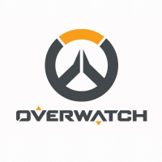
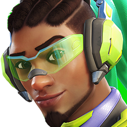

HEROES OF OVERWATCH
Support Heroes

Ana
A founding member of Overwatch and once renowned as the greatest sniper in the world, Ana Amari comes from a long line of decorated military veterans. Though she was thought to have perished in a firefight with Talon, Ana has rejoined the fray to protect her country, family, and closest allies.

Baptiste
An elite combat medic, Baptiste was lured into Talon by the promise of easy riches. Later, disgusted with what he had done, he deserted Talon to forge a new path for himself. Now he works toward a better world, healing where he can and fighting when he must.

Brigitte
A Lindholm through and through, Brigitte’s aptitude for engineering is matched by her sense of honor. From her youth, Brigitte was inspired by the tales of valor she heard from her godfather, Reinhardt. When she came of age, she became the squire to his knight. The two have joined the new Overwatch, hoping to right the wrongs of the world.

Kiriko
Kiriko learned the deadly art of ninjutsu from her mother, Asa. When the Shimada clan fell, the rival Hashimoto took Kiriko’s father hostage. For her safety, Kiriko moved in with her grandmother, who taught her the art of healing. Years later, Kiriko has returned home to free her community from the cruel grip of the Hashimoto.

Lúcio
Lúcio grew up poor in the Rio favelas, before eventually becoming a popular underground DJ. But when the Vishkar Corporation redeveloped the city and cracked down on the community, Lúcio reclaimed his father’s sonic technology from the corporation and used it to rally his people to action. Now an international celebrity, he inspires social change through his music and actions.

Mercy
Orphaned in the Omnic Crisis, child prodigy and nanotechnology pioneer Angela Ziegler became Overwatch’s most prominent combat medic and vocal proponent of global peace. After the organization’s fall, and with the coming of a new war, she wonders if she will ever know peace in her lifetime.

Moira
Controversial geneticist Moira O’Deorain cared only about the evolutionary advancement of humanity. Though her work has earned her many enemies, her alliances with the scientific collective of Oasis and the ruthless organization Talon have freed her from moral and monetary constraints, allowing her to pursue her breakthroughs with great efficiency... and ruthlessness.